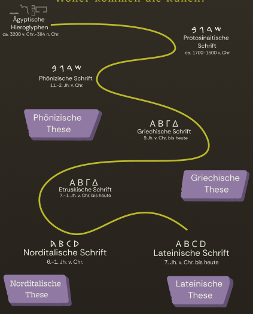

Runen
Eine Schrift nach römischem Vorbild?
Schrift begegnet uns heute überall: in Nachrichten, Büchern oder eben in diesem Text. Zur Zeit der Germanen war das anders. Sie lebten in einer mündlich geprägten Kultur, in der Worte schnell wieder verschwanden, sobald man sie aussprach. Das änderte sich ab der Mitte des 2. Jahrhunderts n. Chr. Ab diesem Zeitpunkt liegen uns Schriftzeugnisse vor, die die Germanen in ihrer eigenen Schrift verfassten: den Runen.
Die Einführung von Schrift war dabei mehr als nur ein praktisches Werkzeug. Sie machte Gedanken und Namen dauerhaft sichtbar und verlieh dem Wort – und dem, der es schreiben konnte – eine besondere Macht. Nicht ohne Grund wurde der Ursprung von Schrift in vielen Kulturen mit Göttern und Mythen verknüpft. Auch bei den Runen stellt sich die Frage, woher die Germanen die Idee zu einer eigenen Schrift nahmen. War das lateinische Alphabet der Römer ihr Vorbild oder steckte etwas ganz anderes dahinter?
Das Ältere Futhark
Das Scrhriftsystem der Germanen trägt den Namen "Älteres Futhark" - benannt nach den ersten sechs Runen dieser Reihe. Es umfasste 24 Runen und wurde bis etwa 700 n. Chr. verwendet, before es vom Jüngeren Futhark der Wikingerzeit abgelöst wurde, das nur noch aus 16 Runen bestand.
Wie unser heutiges Alphabet einer festen Reihenfolge folgt, sind auch die Runen in einer bestimmten Abfolge angeordnert. In dieser Reihenfolde unterscheidert sich das Runensystem deutlich von anderen antiken Alphabesten. Dennoch sind sich Forschende einig, dass die Runenschrift nicht frei erfunden wurde, sondern auf mindestens einem anderen Alphabet basiert. Doch welches war dieses Vorbild?
Wo kommen die Runen her?
Die Suche nach ihrem Ursprung führt tief in die verzweigte Geschichte der Schrift. Die monderne Forschung ist sich einig: Kein Alphabet entsteht isoliert - sie alle sind Teil eines großen, weit zurückliegenden Stammbaums. Doch an welcher Stelle zweigt die germanische Runenschrift von diesem Stamm ab? Während die Entwicklung

Erratet die Runen! 1/3
Manche Runen ähneln unseren lateinischen Buchstaben stark, andere weniger. Probiert es selbst aus: Wie würde man dieses Wort in Runen schreiben?

Erratet die Runen! 2/3
Gut gemacht! Weiter geht's. Wie schreibt man dieses Wort in Runen?

Erratet die Runen! 3/3
Letztes Wort! Schafft ihr es?

Vergleicht die Alphabete!
Um herauszufinden, von welchem Alphabet die Runen abstammen, lassen sich die Schriftsysteme miteinander vergleichen. Dabei zeigt sich: Manche Runen ähneln den Zeichen anderer Alphabete und stehen sogar für denselben Laut. Andere wiederum sehen zwar gleich aus, bezeichnen jedoch einen anderen Laut. Probiert es selbst aus. Konnt ihr erraten, welche Zeichen den Runen entsprechen?